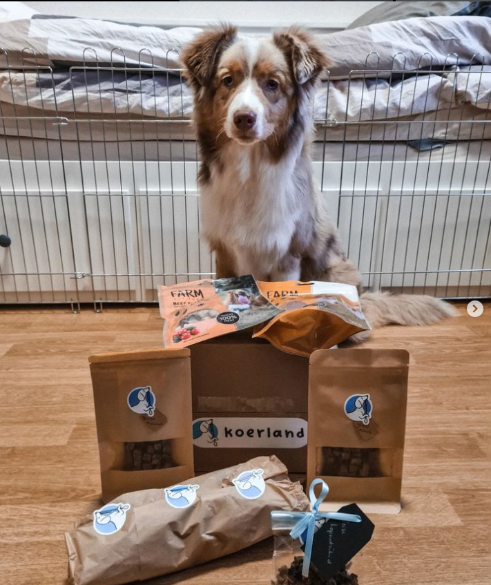
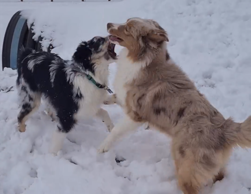
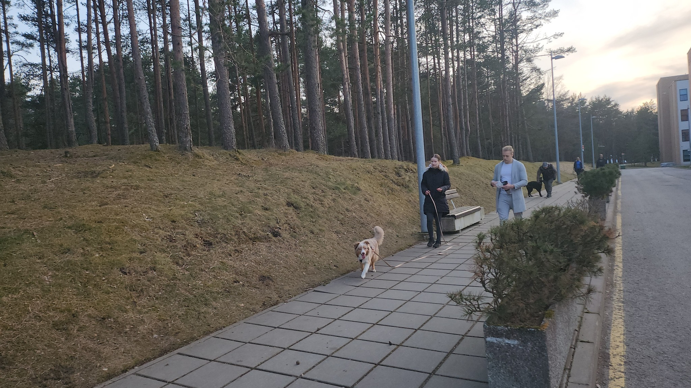

{% extends "base.html" %}
{% block title %}Home{% endblock %}
{% block content %}
Tere Tulemast Lensu Kutsud koertekooli!
Tere tulemast meie koertekooli! Oleme pühendunud sellele, et aidata teie neljajalgse sõbra arengut ja õpetada talle olulisi oskusi ning käitumisreegleid. Meie koolis keskendume positiivsele ja lõbusale õpikogemusele nii teie kui ka teie koera jaoks.

Olenemata teie koera vanusest või tõust, on meie koolis kõigile midagi põnevat õppida. Alustades põhilistest käitumis- ja kuulekusharjutustest kuni edasijõudnumate trikkideni, pakume mitmekülgset ja praktilist koolitust, mis aitab tugevdada teie sidet oma koeraga ja tagada harmooniline kooselu.

Meie koolitajad on kogenud ja kirglikud koerte treenijad, kes on pühendunud teie ja teie koera individuaalsele edu tagamisele. Kasutame positiivseid koolitusmeetodeid, mis põhinevad motiveerimisel, premeerimisel ja julgustamisel, et aidata teie koeral õppida ja kasvada usaldusväärseks ja tasakaalustatud kaaslaseks.

Ootame teid ja teie koera meie koertekooli avastama ning koos lõbusalt ja tulemuslikult õppima! Koos loome teile ja teie koerale parima võimaliku koolituskogemuse, mis aitab tugevdada teie suhet ja luua elukestva sideme.
{% endblock %}